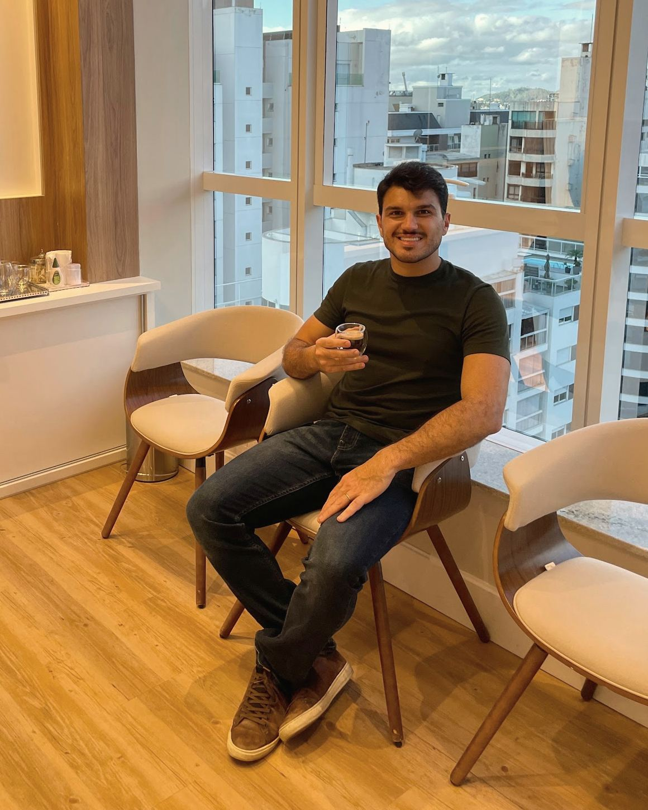

Nutricionista no Centro de Florianópolis
Comida de verdade, sem extremismos.
- Saúde
- Emagrecimento
- Doenças metabólicas
Plano alimentar personalizado, de acordo com os seus objetivos e a sua rotina. No consultório da Av. Trompowsky ou on-line.
Vitor Silveira Szpoganicz · CRN-10 nº 12613
- Centro de Florianópolis
- Segunda a sexta, a partir das 7h30
Você se reconhece?
Comer bem não precisa ser tão confuso.
Situações comuns de quem procura um nutricionista. Se uma delas é a sua, vale uma conversa.
O peso que vai e volta
Os quilos que a dieta tirou voltaram quando a rotina apertou.
Eu sei perder. O difícil é não voltar.
Glicemia alterada ou diabetes
A glicose veio alta no exame ou o diagnóstico já chegou. Agora a dúvida é como montar as refeições.
Não sei mais o que posso comer.
Colesterol ou triglicérides altos
O médico pediu para cuidar da alimentação e você saiu da consulta sem saber por onde começar.
Cuidar da alimentação, tá. Mas como?
Pensar no longo prazo
Nada está alterado ainda, mas você quer comer melhor para chegar bem aos próximos anos.
Quero cuidar disso antes que vire problema.
A dieta que não cabe na semana
O cardápio pede um tempo que você não tem, e na quarta-feira o plano já ficou para trás.
Segunda eu começo de novo.
Informação demais
Cada perfil diz uma coisa sobre carboidrato, e fica difícil saber o que vale para o seu corpo.
Eu só queria alguém que explicasse.
Quem atende
Vitor Szpoganicz, nutricionista.
Alguns anos atrás, o Vitor era sedentário e convivia com o sobrepeso. A virada veio com a mudança dos hábitos de alimentação e de vida, e com ela a decisão de cursar nutrição.
No consultório, a linha é a mesma: comida de verdade, sem complicação. Fora dele, o Vitor treina crossfit e não dispensa um churrasco.
Vitor Silveira Szpoganicz · Nutricionista · CRN-10 nº 12613
O caminho para a longevidade começa com o que você coloca no prato.
Acompanhamento
Primeira consulta e retornos.
A consulta pode ser no consultório ou on-line. Escolha o formato que for melhor para você.
- Presencial
Consulta no Centro
Av. Trompowsky, 291 · sala 1005
No Trompowsky Corporate, Bloco B, numa sala com janela para o Centro.
- Retornos
Depois da consulta
Durante todo o acompanhamento
O Vitor acompanha o plano junto com você.
- On-line
Consulta on-line
De onde você estiver
Para quem mora fora de Florianópolis ou prefere não se deslocar.
Para a consulta
Se quiser, leve os exames recentes e a lista dos medicamentos que você está utilizando.
Como ele trabalha
O que guia o plano.
-
Do mercado à cozinha
Escolhas práticas fazem toda a diferença. A nutrição pode ser simples, fácil e saborosa.
-
Sem extremismos
Nada de cardápio radical. Os passos seguem sem mudanças bruscas ou difíceis de manter.
-
O que diz a ciência
Cada orientação se apoia em evidências científicas. As dúvidas são esclarecidas com essa base.

Primeiro contato
Antes de agendar, uma conversa.
Se quiser, conte pelo WhatsApp o que você procura e combine o horário da consulta.
Onde fica
No Centro, na Trompowsky.
Av. Trompowsky, 291, Bloco B, sala 1005Trompowsky Corporate · Centro
Florianópolis/SC · 88015-300
- Segunda a sexta, a partir das 7h30
- Também atende on-line
Dúvidas
O que mais perguntam.
Vou ter que cortar tudo de que eu gosto?
O que entra e o que sai é decidido na consulta, junto com você.
Atende quem tem diabetes?
Sim. O tratamento de doenças metabólicas, como o diabetes, está entre as áreas do Vitor. A alimentação não substitui a medicação nem o seu médico.
Qual a diferença entre o nutricionista e o médico?
O médico diagnostica e prescreve os remédios. O nutricionista cuida do que vai ao prato e monta o plano alimentar com você.
Quanto custa e quanto tempo dura?
Valores e duração da consulta são informados no primeiro contato pelo WhatsApp.